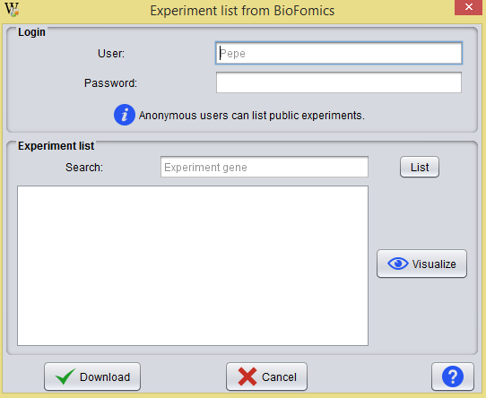
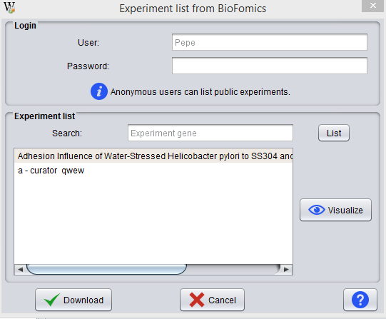
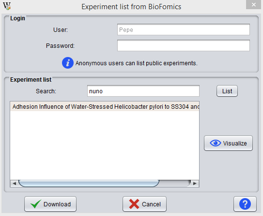
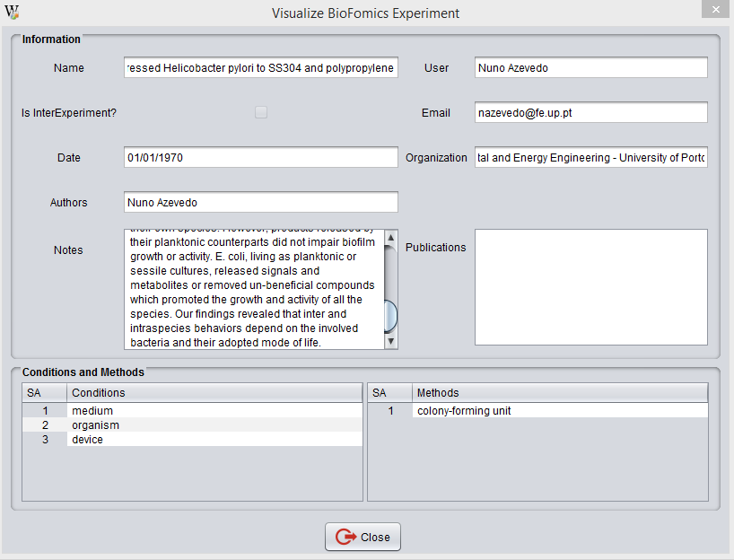
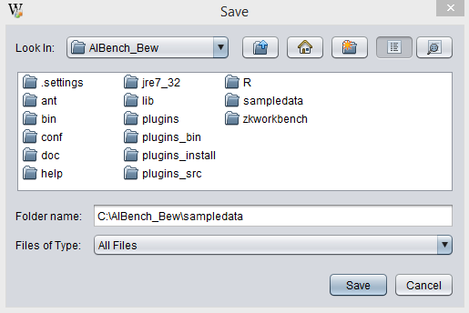

This operation allows the user to download Experiments from BiofOmics database.

In the Login area the user may login with his user account in BiofOmics. It is necessary that the user is logged into the system to list their private experiments. If the user doesn't have an account in BiofOmics, he can only view public experiments.
If the user signs in BiofOmics, using the Login formulary, BEW will show public and private experiments for this user, otherwise it shows only public experiments.

The user may use the search field to find experiments in the list. For example, in the image shown below, the user is searching for experiments authored by someone named "nuno":

Once the user selects an experiment, BEW displays a window like the one shown below:

Once the user selects the experiment that he wants to download, he should indicate the desired location.

NOTE: The user needs Internet connection to perform this operation.